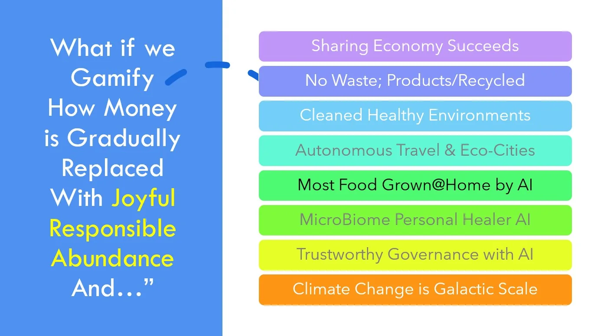
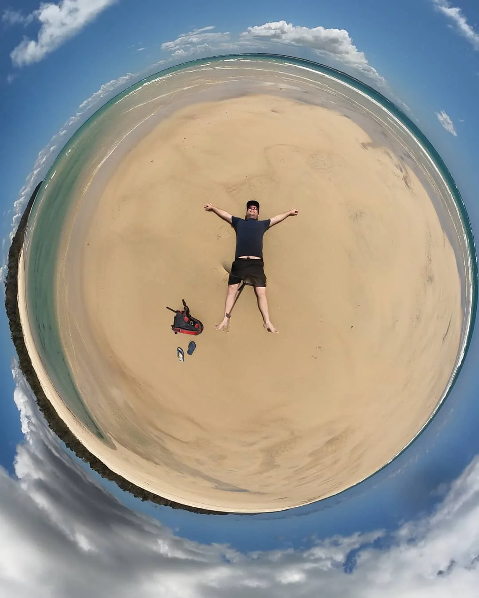
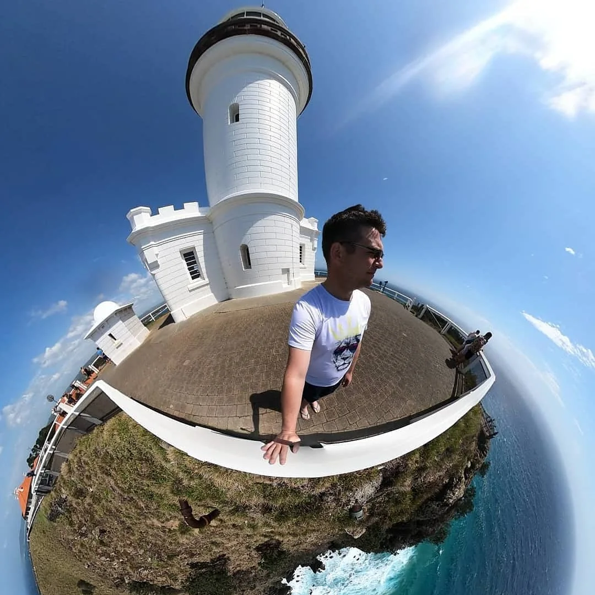
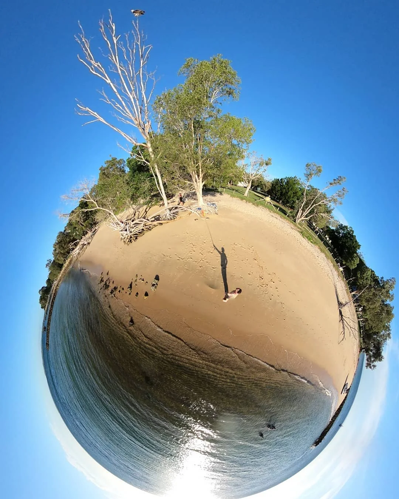

Aura
Can a digital companion help a person remember, learn and create while the person keeps control of their own identity and private information?
The music connects with Luke's other interests: travel, mystery, relationships, community and the future.


From Minjerribah to the world
A place for people who want to support Luke and his work without turning the art into a demand for commercial success.
The work begins on Minjerribah, reaches across Australia and Oceania, then follows connections around the world. Support is welcome, not owed.

Strange But True
Mystery, travel, filmmaking and very big questions meet in a Strange But True adventure.
These are not decorative brand names. Each began as a different attempt to turn a large question into something people could discuss, test or build.
Can a digital companion help a person remember, learn and create while the person keeps control of their own identity and private information?
Can society recognise time, care, knowledge, nature and community as real wealth while keeping joy, responsibility and abundance together so none of the three corrupts the outcome?
Can public decision-making feel less like distant paperwork and more like an understandable, creative part of everyday life?
Can people with different cultures and skills live together for a time, face a real problem and leave behind something useful?

From a dreamscape to living systems
The wider idea is an ecosystem: music can carry emotion, websites can explain, community projects can test small actions, travel can build relationships and artificial intelligence can help people navigate the growing archive.
No single project has to contain everything. Each world can remain useful on its own while still pointing towards the same long-term direction: joyful responsible abundance.
Some songs also connect with Luke's ideas about love, honesty, consent and building a family that can last.
Luke is designing a worldwide group marriage built to last, and he intends to live it. It brings together open relationships, chosen family, shared responsibility, honest communication, cultural difference and the freedom to leave.
Learn more → Clearer adult connectionAn adults-only set of private questions designed to make intimate connection gentler, clearer and more consensual.
Enter the Commons →